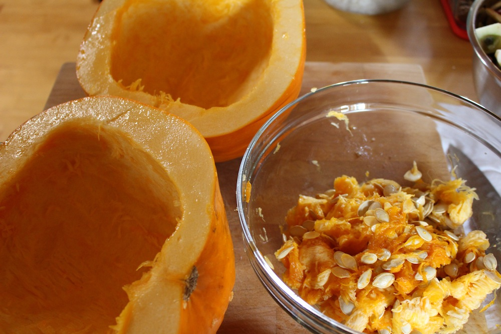
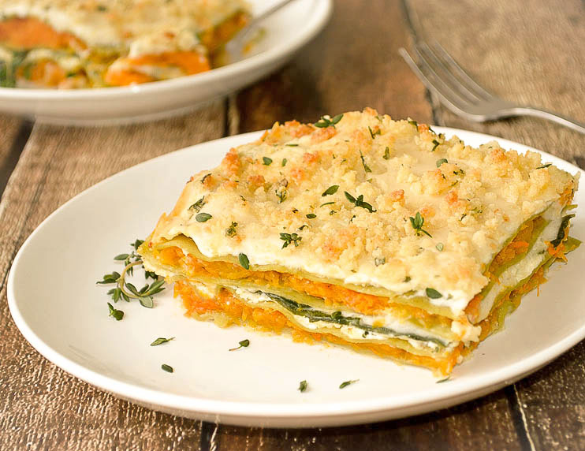
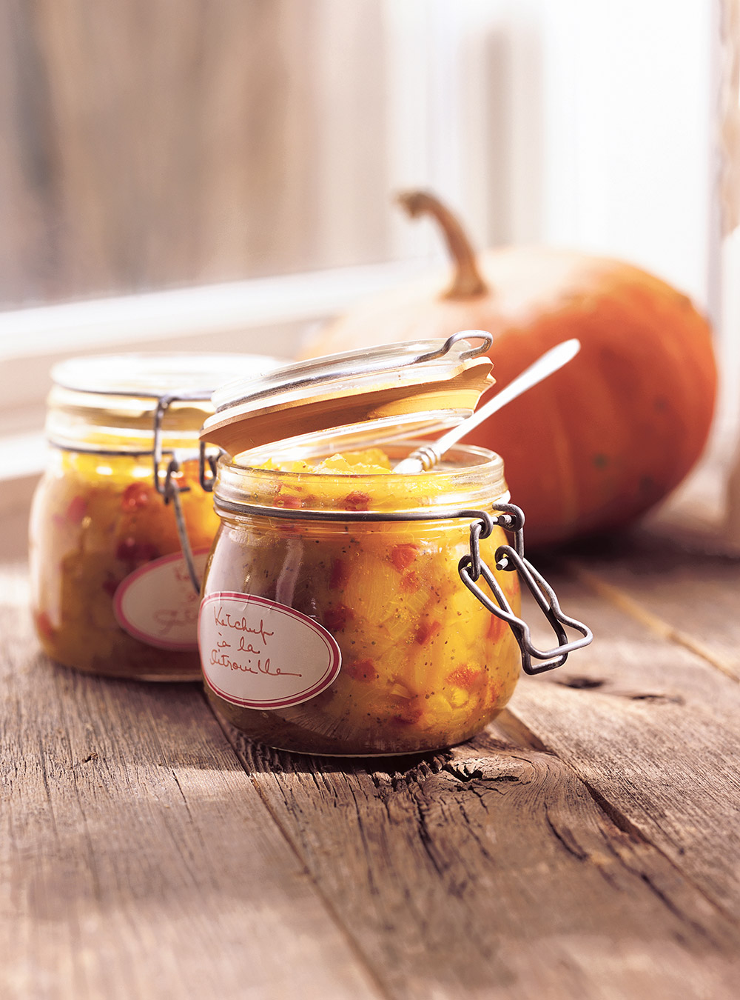

Dans la cuisine
La citrouille n'est pas qu'un objet décoratif, c'est également un légume très versatile. Pratiquement tous ses composants sont comestibles et riches en nutriments.

Ses bienfaits
- Bonne pour la vue
- Aide à maintenir un bon poids
- Contribue à réduire le risque de cancer
- Améliore la protection de la peau
- Améliore la récupération après un etraînement
- Aide à stimuler le système imunitaire
Son achat
Pour la cuisine, il est préférable de s'en tenir aux petites citrouilles. Elles sont moins filandreuses, plus sucrées et moelleuses.
Sa cuisson
- Préchauffer le four à 325°F.
- Couper la citrouille en deux et la vider de ses graines.
- Placer la citrouille à l'envers sur des tôles graissées et cuire tel quel pendant 1 heure.
- Enlever la pulpe cuite et réduire en puréé lisse avec un mélangeur ou un robot culinaire.
Ricardo et la citrouille

